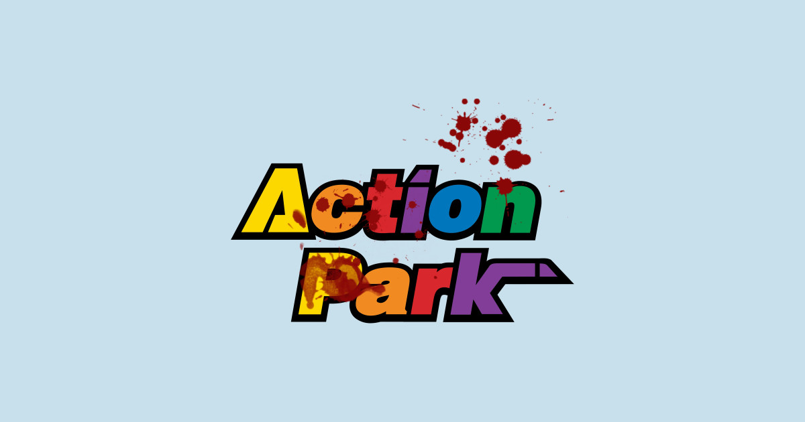

One must guard against being seduced by the ghosts of Action Park, the gone-but-definitely-not-forgotten adventure oasis in Vernon, N.J., that offered thrills, chills and broken bones in equal measure. Those ghosts, many of them in casts or bandages, will gather you in and tell tales (mostly true) about the bloody noses and the chipped teeth you got on the enclosed water slide called the Cannonball Loop. They'll try to explain the rush of adrenaline you felt when you flew off the Alpine Slide. They'll chuckle as they relate how many moons were flashed on the Tarzan Swing, how many bathing tops were ripped off by the force of the water at Surf Hill.
The net effect of their tales is to conjure up the heady intoxication—the correct word here, considering AP's loose handling of alcohol sales—of being young and wild, baking in the summer sun and careening through a place where rules were a mere suggestion, where danger was in the air, where, as the park's official motto put it, "You control the action."
"There was no place like it," says 39-year-old Joe Hession, who began parking cars at Action Park when he was 14. "I could never have had as much fun anywhere else. But you have to remember that a lot of people got hurt there." He frowns and shakes his head. "People died there too."
They did. Six of them between 1978, when the park was born, and '96, when it went out of business. And there is simply no way of calculating how many injuries, ranging from minor to major, were sustained at the sprawling 250-acre playground that came to be known, variously, as Class Action Park, Traction Park, Friction Park and Accident Park.
"No doubt there was fun in the chaos," says Frank DeBerry, once the head lifeguard at the park and now the president and COO of Crystal Mountain ski resort, near Seattle:
"but the chaos caused a lot of problems and a lot of heartache. Things were done off-the-cuff, ride designs just thrown together. They were building the plane while they were flying it."
Still, that lawless ethos must be weighed against the joy it brought hundreds of thousands of kids who had the time of their lives; who got banged and bruised but also learned to test their limits and discover some version of ripped-skin character at a time before parental helicoptering became the norm. "If you just concentrate on the negative," says Andy Mulvihill, whose late father, Gene, was the driving force behind Action Park, "you're not getting the whole story."
"I was 19 or 20 years old. When you're that age you laugh it off. It wasn't until I became an attorney that I realized these rides could be extremely dangerous." said by Al Rescinio, Guest
IMBd: 5.1/10
Rotten Tomatoes: 18%
IndieWire .5/5 Stars
Box Office: 5.1 Million Budget: 19 Million
That story, even after you separate fact from fiction, is grist for a book or movie. In fact, it is scheduled to be the former—Andy and a co-author are writing the story, which was sold to Penguin Random House. And it has already been the latter—last year, no less an authority on general anarchy than Johnny Knoxville produced and starred in Action Point, based entirely on the park. "Gene Mulvihill lived the DIY spirit and tried to spread it," says Knoxville, creator of the Jackass franchise. "Action Park was like Lord of the Flies come to life." Nothing speaks more to the park's danger quotient than the admission from Knoxville—who has been pepper-sprayed, stun-gunned, shot out of a cannon, socked in the testicles by a sledgehammer, gored in the stomach by a bull and KO'd by heavyweight boxer Butterbean—that in trying to duplicate some of AP's perilous "amusements" he was more seriously injured than in any of his Jackass exploits. He suffered four concussions, knocked out a few teeth, earned several stitches ... and, as we shall see, that wasn't the worst of it. "I'll remember that filming for a long time," he says ruefully. Image placeholder title Eugene Mulvihill, a New Jersey businessman with interests all over the place, found himself in the mid-'70s the sole owner of Vernon Valley/Great Gorge, a ski resort in Sussex County, about an hour's drive northwest of New York City and hard by a Hugh Hefner Playboy Club. Mulvihill faced the dilemma of all ski operators: How to monetize the property in the warm-weather months? His idea drifted toward amusements—not the standard roller coasters and carousels but more, well, self-engaging fare. His ski-resort company was called Great American Recreation, and, dammit, Gene Mulvihill was going to re-create in what he considered the American Way. "Gene didn't want to do the same old s---, where you just get strapped into something or it twirls around," says Andy, who usually refers to his dad as Gene. "He wanted to take the idea of skiing, which is exhilarating because you control the action, and transfer it to an amusement park. There's inherent risk in that, but that's what makes it fun." Fun indeed reigned supreme at Action Park, which opened on July 4, 1978. Gene came up with two opening-day promotions that perhaps hinted at his target demographic: a Dolly Parton look-alike contest and a tobacco-spitting competition. Mulvihill had actually debuted the park's first ride two years earlier, back when his nascent idea was known as Vernon Valley Summer Park. There, on the Alpine Slide, guests flew 2,700 feet down Hamburg Mountain (part of the central region of the Appalachians) in a small cart controlled by a steering rod and a brake that usually worked. There was also this factor called gravity, and if your unhelmeted self hurtled down at full speed, you were almost guaranteed to fly off the track. That's what happened to Knoxville, who made the Alpine Slide the centerpiece of Action Point. "It was the heart of their park," says Knoxville, "and it had to be the heart of our park." So one day he strapped himself into a cart on his movie-made Alpine Slide and headed down the track at full tilt.
"We had an ambulance waiting," remembers Knoxville, "motor running and doors open." And? "And they put me right in it. I flew off the track, about 20 feet in the air, maybe six feet above the ground, and landed face-first. Severe concussion. Right to the hospital. When I got home, suddenly, my left eye popped out—what they call a blowout fracture."
He adds this without irony: "All that for nothing, because the movie didn't sell." More pointedly, it bombed, grossing just $5 million. "It is one of my greatest disappointments that I was unable to do right by [Gene Mulvihill] and make a successful movie. I wish I could go back and unf--- it." As the risk-takers started coming to Action Park—this was two decades before Jackass debuted—Gene built fast and furious, spreading the gospel with gloriously cheesy commercials that emphasized a live-on-the-edge ambience, kids zooming out of water slides and ramming each other on go-karts. When Gene discovered that the force of hitting the water at the bottom of Surf Hill could tear off bathing suits, he took immediate action ... by building a grandstand so spectators could watch this teenage burlesque show. When a local TV reporter filming a live segment on the 70-foot bungee jump—the Snapple Snap-Up Whipper Snapper—refused to take the leap, Andy's younger brother, Christopher, pushed him off the ledge. He was acting under instructions from the park's public relations director: Gene's older daughter, Julie. In retrospect, anyone involved in Action Park knows it was a product of a different time, a different collective mindset about risk. Plus, Gene was an expert at schmoozing investigators and would-be investigators. For a while he even got away with setting up his own insurance company based in, ahem, the Cayman Islands. Gene wasn't invulnerable to prosecution—he was indicted for insurance fraud in 1984—and he did get sued, which cost him. But the devil-may-care philosophy of Action Park and its devil-may-care capo went on. Eventually Mulvihill opened three Action Park areas. Alpine Center, Motor World and Water World.
What linked the three lands was this: Chaos was king. There was no Timeout World.
The Alpine Center included the aforementioned slide and bungee jump and, later, the Gladiator Challenge, which pitted pugil-stick-wielding visitors against park-employed combatants. Yeah, that never got out of hand. On one occasion a visitor who'd been beaned one too many times with the bopping stick of a gladiator returned with a few friends, which prompted the gladiator to get a few of his own fellow warriors. The result was an all-out melee involving several dozen people. When the Vernon police eventually restored order, it was all in a day's work for a force that, on another occasion, had to break up a fight between lifeguards and a group of bodybuilders who'd thrown the guards into the pool.
In Motor World employees learned that sticking tennis balls into the governor devices of the Super Go-Karts and the Lola Cars allowed them to go much faster than their advertised 20-mph limit—as high as 50. (In fact, employees were known to take the Lola cars out on Route 94 after hours.) The Battle Action Tanks were another extremely popular feature. Opponents commanded mini rigs and fired tennis ball cannons at one another while getting fired upon, too, by spectators who paid to shoot from afar. In the spirit of driving-range patrons who aim their shots at the poor sap collecting golf balls, so could the shooters aim at the workers disengaging tangled carts and picking up stray balls. There were also two water rides in Motor World: Bumper Boats and Super Speed Boats—though, in reality, both were used for bumping. An added attraction in the Super Speed Boat pond: snakes.
But it was in Water World that things got the most wild and crazy. And dangerous. One could go on for volumes relating all that went down in the chlorinated cacophony, but this is what nostalgic patrons most remember: Water World: Tarzan Swing The Tarzan Swing swung 20 feet high over a spring-fed pool. If you let go too early, you could fall onto cushions. But you could also fall onto rocks and then roll into the water. If you held on too long, you could scrape yourself on the concrete on the far side. And if you didn't let go at all, freaked by the drop, you might swing all the way back and tumble into the woods where you started. In any case, you could dislocate your shoulder from the wild torque of the rope. On the positive side, you could flash a moon. But, whether besuited or bare-assed, landing in the icy water of the pond was no joke. Water World: Aqua Swing The thrill-injury factor of the Aqua Skoot was perennially underrated. A rider sat on a plastic sled and went hurtling down a 60-foot track-slide so fast that he or she skimmed across the pool at the end. In theory, anyway. In practice, if positioned incorrectly the sled could sink as soon as it hit the water, flinging the rider off head-first at a good speed. Then, too, there was always the chance of injury before hitting the water. "The metal rolling pins on the track were like those rollers in a factory," says Craig Cimmons, who worked at the park and is now the director of skiing at Jay Peak Resort in Vermont. "Kids would lean back and hit their head on the rollers, sometimes really hard. A lot of bells were rung." The Kayak Experience closed in 1982, for reasons that will become clear. The Colorado River Ride, according to Cimmons, was "pure mayhem." Tubers would fall out of their vessels at the various junctions, one of which presented a tunnel, or clunk their heads on rocks while jumping from one raft to another, or just generally "taco into each other," in the words of DeBerry. Water World: Cannonball Loop The most infamous ride in this section of the park may have been the Cannonball Loop, a steep, enclosed tube slide that fed a 360-degree vertical turn. Legend has it that a dummy sent down to test the ride early on came shooting out head-less. (Andy Mulvihill concedes that "probably" happened.) But the ride was ultimately opened, and it worked like this: After climbing 50 mettle-testing feet to reach the top, riders would get hosed down to reduce friction, clamber feet-first into the dark shaft and hope they got up enough momentum to negotiate the full loop and come shooting out at the bottom—maybe in the direction they entered ... maybe not. "That ride was just insane," says Andy, who has a high standard for insanity. "If you lost your momentum you would fall to the bottom and smack your face." Even the Mulvihills realized this was too crazy. The Cannonball Loop was frequently closed while workers tinkered with its construction, and it was finally shuttered permanently, offering a kind of visual reminder to the essential unreality of Action Park. Water World: Wave Pool But the greatest danger was clearly at the Wave Pool, introduced in 1981, where on hot weekend days as many as a thousand people would wade into a 100 × 200-odd-foot basin, in which one of the country's first mechanical wave machines produced a greater-than-three-foot swale. The customer base included thousands of New Yorkers who couldn't swim but figured they could. Body surfers would crash into each other in the crowd, and strugglers could quickly disappear into the dark bottom. "The wave pool was legitimately terrifying," says DeBerry. And he was a lifeguard. Can't F---ing Swim. Rescues are rare at most ocean beaches, but Action Park guards made up to 30 a day. "It was simply the norm," says Cimmons. At one point staff decided that if a visitor was pulled out he or she had to wear a wristband that read CFS.
There’s an irresistible allure to these tales, and even someone who never tore off a layer of skin on the Alpine Slide or fished a drunken lug out of the water can shake his head and smile at the those-were-the-days gestalt of Action Park. But there was also real tragedy. On July 8, 1980, a 19-year-old park employee named George Larsson Jr. was taking an after-hours ride on the Alpine Slide when he was flung from the track. He flew about 25 feet, hit his head on a rock, fell into a coma and died several days later. Two summers on, 15-year-old George Lopez drowned in the Wave Pool. A week after that, Jeffrey Nathan, 27, collapsed while riding the White Water Kayak Experience; he allegedly suffered an electric shock, triggering cardiac arrest, and died at a local hospital. (A state report pointed to a current in the circuit of the ride's underwater fan.) Fatalities numbers 4 and 5 came in the summer of '84. First, a visitor died from what was believed to be a heart attack caused by the shock of hitting the cold spring water beneath the Tarzan Swing; a couple weeks later, 20-year-old Donald DePass drowned in the Wave Pool—which was also the site of number 6, when 18-year-old Gregory Grandchamps drowned. In truth, though, most visitors thought more about the daily drumbeat of injuries than they did about the fatalities. Almost everyone sustained some kind of bang-up at Action Park. It was part of the appeal. But it couldn't go on forever.
Eager young thrill-seekers were disappointed in the summer of 1997 when they journeyed to Vernon, only to find Action Park's doors closed. With the fraud indictment and other settlements related to various lawsuits, three of them from park fatalities, the problems were piling up. Great American Recreation, which was reportedly as much as $48 million in debt, had gone bankrupt. Gene's love for Action Park never went away, though, and it was passed on to Andy, who stayed active in the various family businesses surrounding Great Gorge. In 2010 the Mulvihills bought back the property from Intrawest, the ski conglomerate that had scooped it up in bankruptcy, and schemed to re-create the mayhem of years past. Alas, the magic was gone. So were some of Gene's investors. And so too was Gene, who died at 78 on Oct. 27, 2012. Appropriately, he went out with noise: His funeral coincided with the arrival of Super Storm Sandy. The death was big news in Vernon and points beyond. The park was sold to the Koffman family, one of Gene's original investors, and then to Snow Operating company, which today has controlling interest in what is called Mountain Creek Water Park. And that outfit's CEO? The same Joe Hession who patrolled the lot at Action Park 25 years ago, when he was 14, his life story having completed the full Cannonball Loop. While it's not all Hession's money, it's clearly Hession's show. He and Andy Mulvihill are two sides of the same coin. Like Mulvihill, Hession is a take-charge guy, outgoing and confident. But while Andy was the kid who donned his hockey equipment to test a ride that may or may not have put him in the hospital, Hession, who grew up three miles from Action Park, was the kid who always looked before he leaped. That feeling is reflected in the contemporary Mountain Creek. While there are still rides and water, the park is a considerably more cautious version of its progenitor. Gone is the Tarzan Swing, closed in 2018. The Colorado River ride requires patrons to wear a helmet. The Wave Pool is tamer—nothing like what came to be known as "the Grave Pool" at the old Action Park. And, most obviously, the Alpine Mountain Coaster now runs on a chaoslimiting track, unlike the audacious old Alpine Slide. At Mountain Creek, you don't control the action. Like virtually everyone who ever met Gene Mulvihill, Hession understands the charm of the man, his ingenuity, his gambler's guile, even what Johnny Knoxville goes so far as to call his genius. "There will never be another water park that looks like his water park," Hession says. "You would need a crazy person—and I say that with all due respect. The only one who could've done it was Gene Mulvihill. It's just that we can't be that person now. It wouldn't work." Andy Mulvihill pokes at his salmon lunch entrée and thinks about his father, seven years gone. At 56, Andy is a burly man, outgoing, challenge-ready, devil in his eyes; in some ways he's that same kid who tested rides in his hockey stuff without giving it a thought. His brown hair has gone to gray, but he still looks like the alumni chairman of the Kegger Committee. Like his dad, he's both smart and street smart. He graduated with a degree in political science from Stanford, where his adviser was a young professor named Condoleezza Rice. ("I picked her before the Bushes did," he says.) Over the decades Andy has relived the Action Park fatalities many times, especially since in one case, the 1984 DePass drowning, he was the one who, as a 20-year-old lifeguard, pulled the body from the bottom. "It was devastating," he says. But the Mulvihills lived by a code. Amusement/water parks come with an implicit buyer-beware contract. "Do they close the Jersey Shore when there's a drowning?" Andy asks. "Should you only have things for people that are 100% safe? Life would be pretty boring, right?" Needless to say, those questions are rhetorical. In his reflective moments, though, Andy concedes his father was to a large degree the author of his own misfortunes, and he certainly walked an ethical tightrope in his business operations. "Gene cut a lot of corners—a lot of corners," he says, "and sometimes he got caught and there were repercussions. That's what happens when you live life like there's no tomorrow." It nags at Andy that so many believe his father brushed off the deaths in a headlong pursuit of the bottom line. "For Gene, Action Park was never about the money," Andy says. "It was about the fun, about creating something that no one had ever seen." He shakes his head firmly. "As for the people who died, I'm sure Dad has gone and looked for each and every one of them to say he's sorry."